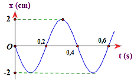
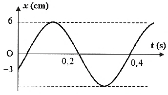
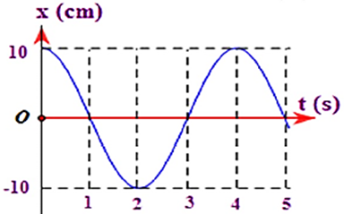
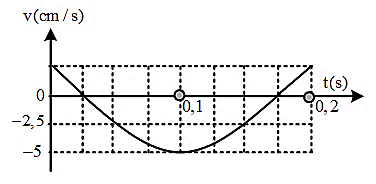

PHẦN I. Câu trắc nghiệm nhiều phương án lựa chọn
Mỗi câu có 4 phương án, chỉ chọn một đáp án đúng (0,25 điểm).
1
Tìm phát biểu sai khi nói về dao động điều hòa.
2
Một chất điểm dao động điều hòa, vectơ gia tốc của chất điểm có
3
Khi vật dao động điều hòa đi từ biên đến vị trí cân bằng thì
4
Một vật dao động điều hòa với biên độ 4 cm và tốc độ cực đại là $12\pi$ cm/s thì có chu kì là
5
Một vật dao động điều hòa trên trục Ox với tốc độ cực đại 30 cm/s và gia tốc cực đại 1,5 m/s². Biên độ dao động của vật là
6
Vận tốc của một vật dao động điều hòa khi đi qua vị trí cân bằng là 1 cm/s và gia tốc của vật khi ở vị trí biên là 1,57 cm/s². Chu kì dao động của vật là
7
Một vật dao động điều hòa có đồ thị li độ phụ thuộc thời gian như hình bên. Tốc độ cực đại là

8
Hình vẽ là dao động điều hòa của một vật. Hãy xác định gia tốc cực đại của vật dao động:

9
Một chất điểm dao động điều hòa trên trục Ox. Khi chất điểm đi qua vị trí cân bằng thì tốc độ của nó là 20 cm/s. Khi chất điểm có tốc độ là 10 cm/s thì gia tốc của nó có độ lớn là $40\sqrt{3}$ cm/s². Biên độ dao động của chất điểm là
10
Trên hình vẽ là đồ thị sự phụ thuộc của vận tốc theo li độ của một chất điểm dao động điều hòa trên trục Ox. Vận tốc cực đại của dao động gần nhất với giá trị nào sau đây?

11
Một vật dao động điều hoà, khi vật có li độ 4 cm thì tốc độ là $30\pi$ (cm/s), còn khi vật có li độ 3 cm thì vận tốc là $40\pi$ (cm/s). Biên độ và tần số của dao động là
12
Một chất điểm dao động điều hòa dọc theo trục Ox, với O trùng với vị trí cân bằng của chất điểm. Đường biểu diễn sự phụ thuộc li độ chất điểm theo thời gian t cho ở hình vẽ. Phương trình vận tốc của chất điểm là:

13

Đồ thị biểu diễn $x=A\cos(\omega t+\varphi)$. Phương trình vận tốc dao động là:
14
Đồ thị biểu diễn $x=A\cos(\omega t+\varphi)$. Phương trình vận tốc dao động là:

15
Một chất điểm dao động điều hòa có phương trình gia tốc là $a=160\cos\left(2\pi t+\frac{\pi}{2}\right)$ cm/s$^2$. Lấy $\pi^2=10$. Xác định biên độ dao động của vật.
16
Tốc độ và li độ của một chất điểm dao động điều hòa có hệ thức $\frac{x^{2}}{16}+\frac{v^{2}}{640}=1$ ($x$ tính bằng cm, $v$ tính bằng cm/s). Lấy $\pi^2=10$. Chu kì dao động của chất điểm là
17

Hình bên là đồ thị biểu diễn sự phụ thuộc của vận tốc $v$ theo thời gian $t$ của một vật dao động điều hòa. Phương trình dao động của vật là
18
Phương trình vận tốc của một vật dao động là $v=120\cos20t$ (cm/s), đơn vị đo của thời gian $t$ là giây. Vào thời điểm $t=\frac{T}{6}$ ($T$ là chu kì dao động), vật có li độ là
19
Một chất điểm dao động điều hoà. Biết li độ và vận tốc của chất điểm tại thời điểm $t_1$ lần lượt là $x_1=3$ cm và $v_1=-60\sqrt{3}$ cm/s; tại thời điểm $t_2$ lần lượt là $x_2=3\sqrt{2}$ cm và $v_2=60\sqrt{2}$ cm/s. Biên độ và tần số góc của dao động lần lượt là
20
Một vật dao động điều hòa với phương trình $x=10\cos\left(2\pi t-\frac{\pi}{6}\right)$ cm, lấy $\pi^{2}=10$. Gia tốc của vật khi có li độ $x = 5$ cm là